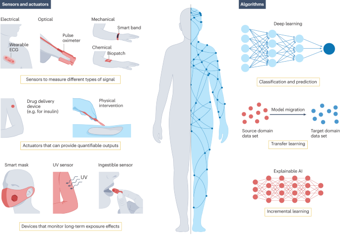

Central EHR vs Distributed Twins
$\text{UNIV}\to\text{UB}\to\text{UKB}\to\text{UI}\to\text{UX}$
Larry's cameo in the data center race as an opposed dimension to Ukubona LLC's vision.
Summary
Ukubona LLC proposes a patient-owned, decentralized digital twin system for healthcare records and personalized medicine. Each person has a dynamic virtual replica (the "digital twin") that aggregates and models their health data—medical history, labs, genetics, wearables, lifestyle factors, and potentially predictive simulations.
Ukubona creates the twin, curates it, and keeps it continuously updated as a service. The individual retains full control via passcode or key-based access, deciding exactly what to share and with whom. Care providers (doctors, hospitals) access the twin only through Ukubona's secure portal, with explicit patient permission. This makes both the patient and the provider clients of Ukubona, turning the company into a neutral, trusted intermediary rather than a data hoarder.
The result is truly decentralized records: data stays primarily under individual sovereignty instead of being locked into hospital or corporate silos. This contrasts sharply with the dominant industry trend—exemplified by Oracle (with its Cerner EHR and new AI-driven systems), OpenAI, Nvidia, and others—toward massive centralized Electronic Health Records (EHR) databases and data lakes optimized for big data analytics and training giant AI models. The user argues that centralized approaches prioritize scale and population-level insights over genuine personalization.
This idea aligns with Ukubona's broader philosophical framing (evident in the provided site content): "stochastic foraging" (ant-inspired decentralized optimization), "to see blindly" (epistemic humility via local gradients rather than god's-eye maps), emergent intelligence from simple local rules, and continuous radar-like scanning (the 360°/60s logo metaphor) in uncertain, high-dimensional spaces.
Critique
This is a strong, timely, and philosophically coherent counter-proposal to the current AI-healthcare hype cycle. It directly challenges the "bigger centralized data centers and EHRs = better AI" bet that Oracle is making with its $300B-scale Stargate commitment to OpenAI (as detailed in the Bloomberg article). That bet assumes insatiable demand for centralized compute and data aggregation, but it carries real bubble risks: enormous energy demands (4.5 GW+), dependency on unproven economics from loss-making AI labs, delays, and vulnerability to hype cycles. Ukubona's model offers a more distributed, resilient, and human-centered alternative.
Strengths
- Superior Personalization and Precision Medicine — Centralized big data excels at averages and correlations but often fails at true n-of-1 care due to individual variability (genetics, environment, comorbidities). A well-maintained personal digital twin enables highly individualized simulations, "what-if" treatment testing, and early warnings.
- Genuine Patient Sovereignty and Privacy — This addresses core ethical pain points. Patients control access, reducing risks of mass breaches, secondary data sales, insurer/government overreach, or "surveillance capitalism" in healthcare.
- Philosophical and Systemic Elegance — The stochastic foraging / blind vision / ant colony optimization framing is excellent. It mirrors proven decentralized systems (SGD in ML, stigmergy in biology, blockchain).
- Resilience and Anti-Fragility — Decentralized records are harder to censor, corrupt, or lose entirely.
Weaknesses and Practical Challenges
- Execution and Data Quality — "Ukubona keeps it up-to-date" is the hardest part. Healthcare data is notoriously fragmented, inconsistent, and delayed.
- Regulatory, Legal, and Liability Risks — Healthcare is one of the most regulated domains. Acting as creator/curator exposes Ukubona to significant liability.
- Adoption and Incentives — Doctors are busy and embedded in existing workflows. Adding another portal creates friction unless it demonstrably saves time or improves outcomes.
- Technical and Scalability Limits — Full physiological digital twins remain advanced and computationally intensive for widespread use.
- Market Timing vs. Hype — Digital twins are trendy, but so is centralized AI infrastructure. Ukubona must prove superior usability and outcomes in real clinical settings.
Overall Assessment
This is a compelling vision with deep intellectual roots and strong alignment with values of autonomy, privacy, and precision. It offers a principled alternative to the centralized "big data or bust" approach critiqued (implicitly) in the Oracle/Stargate story. The stochastic foraging philosophy isn't just branding—it's a coherent operating model that could differentiate Ukubona powerfully in a crowded space.
Success will hinge on execution: starting focused (e.g., specific conditions like diabetes or oncology), forging partnerships with providers and device makers, navigating regulation thoughtfully, and delivering measurable clinical value. Pure decentralization is idealistic; the winning path is likely pragmatic hybridization. If done right, this could be a meaningful step toward more humane, effective healthcare rather than more extractive AI infrastructure. It's worth pursuing, but the "wild" of healthcare incentives and regulation will test the scout's foraging skills severely.
G. Ivyabona
The Distinction Between Surveillance and Witnessing
The footer of this site makes a linguistic distinction that is also an architectural one. Ukubona means "to see"—an act of projection, a vector from subject to object. The centralized model (Oracle, the Stargate) excels at seeing. It is a Panopticon. It casts a light so bright it bleaches the nuance out of the shadow.
Ivyabona means "to witness"—to verify, to reflect, to acknowledge presence without consuming the subject. This is the role of the Digital Twin. While the Data Center demands your data to feed its own hunger (model weights), the Twin accepts your data to confirm your own reality.
To be seen by a corporation is to be captured. To be witnessed by one's own ledger is to be grounded. We are building mirrors, not cameras.
M. The Membrane
Selective Permeability as the Definition of Life
Biology solved the data privacy problem three billion years ago. It created the cell wall. Life does not exist in a homogenous soup (the Data Lake); it exists because of barriers that separate self from environment.
The Oracle wager assumes that the walls should come down—that fluidity and total aggregation yield intelligence. Thermodynamics suggests otherwise: without a boundary, entropy maximizes immediately. The organism dies.
The Ukubona Twin acts as the semi-permeable membrane of the digital self. It allows signals to pass (an API call, a risk score, a diagnostic alert) while keeping the organelles (the raw genomic data, the unvarnished history) secure inside the cytoplasm. Intelligence is not just processing power; it is the ability to maintain a gradient across a boundary.
O. Counterpoint
The Data Center as Cathedral; the Twin as Instrument
The centralized wager imagines salvation through scale: more compute, more data, more aggregation. A cathedral of servers humming at gigawatt scale, promising omniscience through accumulation. It is Apollonian in the extreme — marble floors, clean schemas, god’s-eye dashboards.
Ukubona’s wager is smaller, stranger, and more musical. Not a cathedral but an instrument. The digital twin is tuned per patient, recalibrated continuously, responsive to touch. It does not aspire to see everything; it aspires to model one life with fidelity.
Centralization optimizes population loss functions. The twin optimizes the gradient of a single body in time. One is a star collapsing matter inward. The other is a raindrop tracing its own descent.
Refinement
From Ideology to Architecture
The real question is not centralized versus decentralized as dogma, but where state lives and who holds the keys. A viable path forward may require layered sovereignty:
- Local custody — raw identity-linked data encrypted and patient-controlled.
- Shared models — population-trained priors that improve individual inference without absorbing raw records.
- Edge simulation — lightweight “what-if” engines that run at the boundary, not in a distant vault.
In this framing, scale serves the individual rather than subsuming them. Population intelligence becomes prior; the patient remains posterior.
Stress Test
Where the Twin Must Prove Itself
Philosophy will not win adoption; frictionless utility will. The twin must:
- Reduce clinician documentation burden rather than add another portal.
- Demonstrate measurable outcome improvements in defined cohorts.
- Integrate passively with existing EHR workflows.
- Quantify risk transparently — medically and financially.
If the twin cannot shorten visits, prevent admissions, or clarify decisions under uncertainty, it becomes metaphor. If it can, it becomes infrastructure.
Ledger
An Accounting of Survival
The race is not merely technological. It is thermodynamic. Centralized systems burn immense energy seeking coherence. Decentralized systems dissipate locally, adaptively, at the edge.
Survival in complex systems favors entities that can sense gradients quickly and adjust without collapse. The digital twin, if built with humility, becomes less an empire and more a scout — navigating uncertainty one patient at a time.
The wager, then, is not against scale, but against abstraction without embodiment. To see is powerful. To witness — continuously, locally, responsibly — may be stronger.
A. Two Heat Engines
Oracle's Carnot cycle versus Ukubona's dissipative structure
Larry Ellison's $300B Stargate wager represents the ultimate Carnot engine: massive thermal gradients (4.5 GW of power), maximum theoretical efficiency, perfect centralization of energy flow. It's the star in our optimization landscape—a bright, singular attractor where all trajectories converge. Train bigger models, aggregate more data, extract maximum work from the temperature differential between raw information and actionable insight.
But Carnot engines operate at thermodynamic equilibrium. They're reversible, deterministic, closed. They optimize for efficiency at the cost of adaptability. When the fuel supply shifts (regulatory changes, market corrections, energy costs), when the reservoir runs dry (patient consent withdrawal, privacy backlash), the entire system stalls. This is why bubbles pop: over-optimization to a single fitness landscape that suddenly shifts.
Ukubona's digital twin network is a far-from-equilibrium dissipative structure—Prigogine's raindrop, not Carnot's piston. Each twin is a local heat engine maintaining its own gradient, constantly exchanging energy (data) with its environment (providers, devices, lifestyle changes) while remaining sovereign. The system as a whole doesn't maximize efficiency; it maximizes resilience through diversity. Temperature stays above zero. Stochastic noise allows escape from local minima. When one pathway fails, the ants find another.
The thermodynamic question: Which regime better describes healthcare in 2025? A closed, optimizable system amenable to centralized extraction? Or an open, irreversible flow requiring distributed sense-making? Oracle bets on the former. Ukubona assumes the latter. Both can't be right.
God's-Eye View vs. Blind Foraging
Why centralization promises omniscience but delivers myopia
The seduction of Oracle's approach is the god's-eye view fantasy: aggregate enough patients, enough genomic sequences, enough treatment outcomes, and the optimal care pathway for everyone becomes computationally tractable. This is the Apollonian dream—perfect form, total knowledge, the loss landscape fully mapped. Just run gradient descent at planetary scale.
But healthcare is a wicked problem in Rittel's sense. The act of measurement changes the system (Hawthorne effects, defensive medicine). Causal structures are non-stationary (pathogens evolve, lifestyles shift, new therapies emerge). Privacy constraints make true population-level data collection impossible without coercion. Most critically: individuals are not IID samples from a population distribution. Your diabetes is not statistically typical diabetes; it's uniquely yours, embedded in your genome, microbiome, stress patterns, and life history.
Centralized models must smooth over this heterogeneity to function. They see the average diabetic, the prototypical cancer patient, the modal drug response. This works for public health—for setting population policy—but fails precisely where personalized medicine promises most: the outlier, the atypical presentation, the patient whose biology doesn't read the textbook.
Ukubona's "to see blindly" is epistemic humility operationalized. Each digital twin is an ant with only local gradient information. It doesn't know the global optimum because there isn't one—the fitness landscape is unique per patient and changes in real-time. The twin samples, explores, updates. It uses the person's own data as ground truth rather than regressing them toward population means. This is n-of-1 trial design, Bayesian updating, iterative refinement—the opposite of batch training on pooled data.
The irony: Oracle's approach claims precision via scale but delivers averaged imprecision. Ukubona claims precision via sovereignty and delivers irreducible personalization. Which medical future do we want?
The Daemon's Portal
Possession, performance, and the access control problem
Nietzsche's daemon—the intoxication made audible in Gould's humming, the physical dissipation in Bernstein's conducting—is energy overflowing the container. It can't be stored, only channeled. This is why live performance differs fundamentally from recorded music: the daemon is present, possessing the performer, creating irreversible flows of affect and attention.
Your health data is your daemon. It's the living trace of your biological becoming—not a static record but an ongoing energetic signature. When Oracle centralizes this, it's like recording every Glenn Gould performance and averaging them to find the "optimal" Goldberg Variations. You get technical correctness but kill the daemon.
Ukubona's key-based access model is the daemon's portal: you decide when to open the channel, who gets possessed by your data's implications. Your oncologist gets read access during treatment. The clinical trial gets anonymized gradients for model updating. Your insurer gets nothing unless you explicitly consent. Each data interaction is a performance—specific, contextual, revocable—not a permanent extraction.
This aligns with Nietzsche's abundance/impoverishment dichotomy. Centralized systems operate from scarcity logic: hoard all data because you never know what signal you'll need later. Distributed systems operate from abundance logic: generate data continuously, share it fluidly, trust that the relevant signals will emerge from local interactions rather than global archives.
The daemon doesn't live in databases. It lives in flows, in relationships, in the irreversible thermodynamic arrow of actual care delivery. Ukubona creates the infrastructure for those flows. Oracle builds increasingly elaborate cages.
Shorting the Bubble
Why Ukubona's bet against centralization might be perfectly timed
The Bloomberg piece on Oracle's Stargate deal reads like late-stage bubble semiotics: "$300B over four years," "ChatGPT may need just 10% of planned capacity," "aggressive revenue targets unlikely to be met," "energy demands approaching small nation scale," "delays and cost overruns expected." These are warning signs visible only to those not intoxicated by the hype.
Ellison's quote—"That's why you have to build them now, because the demand is insatiable"—is exactly what every bubble architect says before the pop. It assumes linear or exponential continuation of current trends (AI compute demand), ignores obvious physical and economic constraints (energy, cooling, capital efficiency), and most tellingly, mistakes correlation for causation: centralized data centers enabled current AI capabilities, therefore maximum centralization maximizes future capabilities.
But we've seen this movie before. Pets.com had insatiable demand too—until it didn't. Dot-com fiber networks were going to carry infinite traffic—until dark fiber became a meme. The marginal returns curve always bends; the question is when.
Ukubona's timing might be exquisite precisely because it's counter-cyclical. Launch a decentralized solution when everyone else is doubling down on centralization. By the time Oracle's data centers come online (if they come online fully), the market may have already rotated toward privacy-first, patient-owned models driven by:
- Regulatory pressure — GDPR-style frameworks spreading globally, making centralized health data aggregation legally risky
- Energy economics — Compute costs rising as easy renewable capacity saturates, making distributed inference more attractive
- Model efficiency gains — Smaller, specialized models (domain-tuned LLMs, efficient transformers) reducing need for brute-force scale
- Consumer demand — Growing awareness that "free" services mean data extraction, creating willingness to pay for sovereignty
- Clinical evidence — Early studies showing n-of-1 approaches outperforming population models for certain conditions
This is the stochastic noise as escape mechanism. While everyone converges on the star (centralized AI), Ukubona explores the raindrop regions (decentralized twins). If the landscape shifts—and infrastructure bubbles always shift—suddenly those exploratory forays become the new high ground.
The risk: being too early. The opportunity: being contrarian when the herd is maximally concentrated. That's not cautious; it's Dionysian frenzy channeled into strategic timing. Ukubona isn't passively waiting for Oracle to fail. It's actively building the alternative that looks visionary when centralization stumbles.
X. Dissipative Twin
Energy Throughput in the Personal Ledger
Where Oracle’s vision builds cathedrals of compute—gigawatt-scale data centers devouring power to train god’s-eye models on aggregated populations—Ukubona’s digital twin is a local dissipative structure. It maintains order far from equilibrium by continuously metabolizing modest, consented flows of data: wearables, labs, genetics, lived experience.
This is Prigogine in the flesh of care. The twin does not hoard; it throughputs. Noise is not error to be suppressed but the very gradient that allows escape from frozen local minima. The patient’s body and life become the heat engine; the twin is its open ledger of becoming.

Gould’s Twin
Intoxication Made Computable
Glenn Gould attacked the piano not as a machine to be mastered but as a site of ecstatic overflow. The same principle must animate the digital twin. Centralized EHRs and population-scale models produce polished, Apollonian averages—safe, standardized, impoverished. Ukubona’s twin must carry the Dionysian frenzy of the individual: the idiosyncratic rhythm of one person’s biomarkers, the unexpected cadence of their daily life, the wild interpretive choices that define a life.
The daemon does not reside in the data center. It lives in the continuous, fevered dialogue between body and twin—updated, contested, performed anew each day. This is precision medicine that does not flatten the human but amplifies their unique music.
The Scout’s Ledger
From Stochastic Foraging to Sovereign Flight
The ant does not possess a map of the territory. It follows local gradients, deposits pheromones, and lets collective intelligence emerge. Ukubona’s architecture must do the same: each patient’s twin forages across fragmented sources, guided by consent and local rules, never surrendering sovereignty to a central queen.
This is the true opposition to the Oracle-Stargate bet. Not Luddite rejection of scale, but a deeper recognition that in high-dimensional, uncertain spaces—biology, life itself—the winning strategy is decentralized scouting with sovereign memory. The twin becomes the patient’s personal 360° radar, scanning every 60 seconds, remembering what only they can authorize to be shared.
The centralized data lake promises god-like vision and delivers surveillance. The patient-owned twin offers humble, blind seeing—and in that humility, genuine abundance.
- Start narrow: oncology, rare disease, long COVID—domains where n-of-1 variance defeats population models.
- Build the open ledger first: patient-controlled access layers using modern cryptographic primitives.
- Hybridize where necessary, never centralize by default.